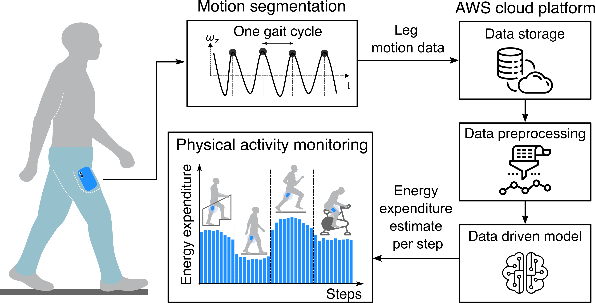
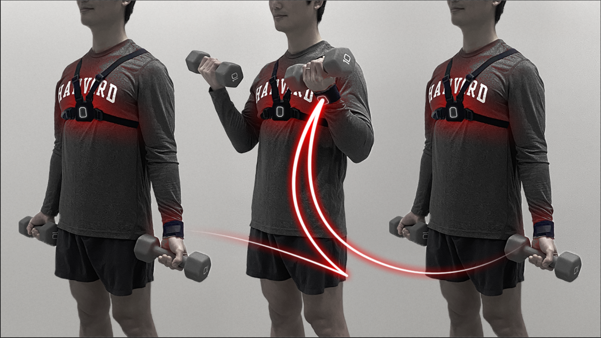
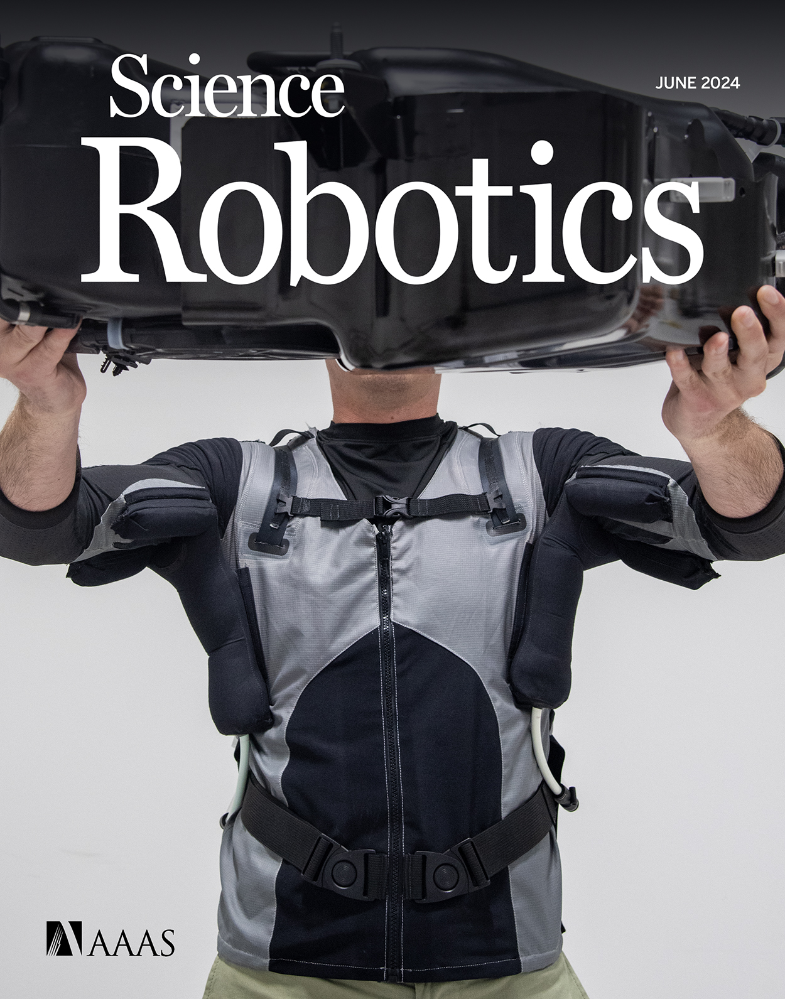
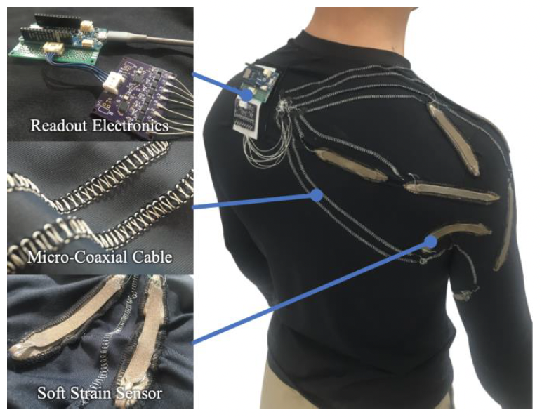
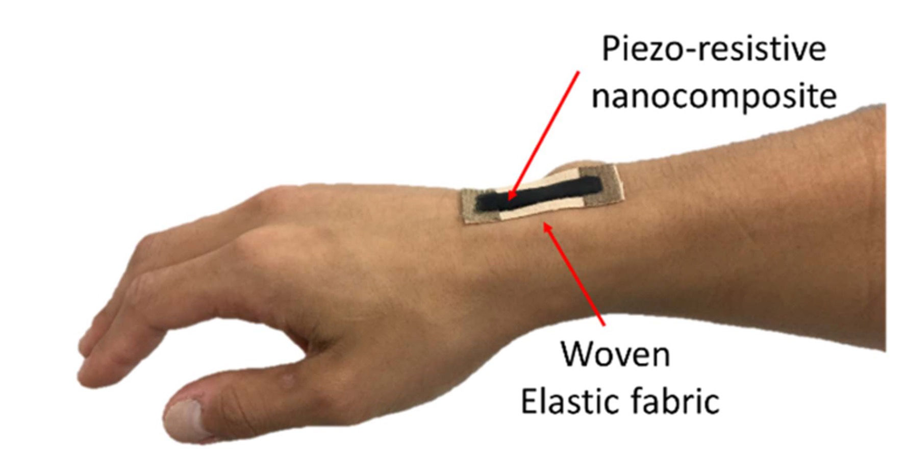
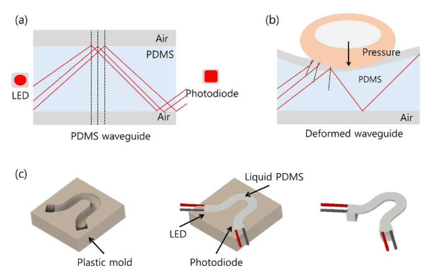
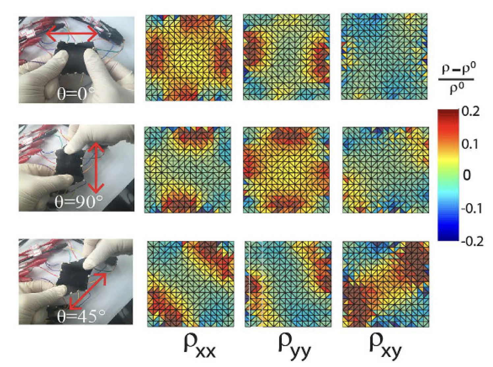
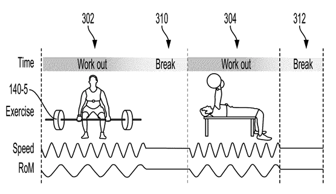

|
Haedo Cho
I'm a PhD candidate at Slade Lab at
Harvard SEAS, and was a recipient of the Dean's Competitive Fund for Promising Scholarship. I am broadly interested in wearable robotics, biomechanics, and artificial intelligence.
|
ResearchWork during my Ph.D in Walsh lab and Slade lab |
|  |
A smartphone activity monitor that accurately estimates energy expenditure Haedo Cho and Patrick Slade. Under Review at Nature Computational Science, 2025. |
|  |
Learning-based 3D human kinematics estimation using behavioral constraints from activity classification
Daekyum Kim, Yichu Jin*, Haedo Cho*, Truman Jones, Yu Meng Zhou, Ameneh Fadaie, Dmitry Popov, Krithika Swaminathan, Conor J. Walsh. Nature Communications, 2025, pdf, demo video, media coverage *These authors contributed equally. |
|  |
A portable inflatable soft wearable robot to assist the shoulder during industrial work
Zhou, Y.M., Hohimer, C.J., Young, H.T., McCann, C.M., Pont-Esteban, D., Civici, U.S., Jin, Y., Murphy, P., Wagner, D., Cole, T., Phipps, N., Haedo Cho, et al. Science Robotics, 2024, pdf |
|  |
Soft sensing shirt for shoulder kinematics estimation
Yichu Jin, Clare M. Glover, Haedo Cho, Olumide A. Araromi, Maximilian A. Graule, Nian Li, Robert J. Wood, Conor J. Walsh. 2020 IEEE International Conference on Robotics and Automation (ICRA), 2020, pdf |
|
Work during master program in KAIST |
|  |
Dispenser printing of piezo-resistive nanocomposite on woven elastic fabric and hysteresis compensation for skin-mountable stretch sensing
Hyosang Lee*, Haedo Cho*, Sangjoon J. Kim, Yeongjin Kim, Jung Kim. Smart Materials and Structures, 2018, pdf, demo video *These authors contributed equally. |
|  |
Design of an optical soft sensor for measuring fingertip force and contact recognition Haedo Cho, Hyosang Lee, Yeongjin Kim, Jung Kim. International Journal of Control, Automation and Systems, 2017, pdf, demo video |
|  |
Soft nanocomposite based multi-point, multi-directional strain mapping sensor using anisotropic electrical impedance tomography Hyosang Lee, Donguk Kwon, Haedo Cho, Inkyu Park, Jung Kim. Scientific Reports, 2017, pdf |
Industry Experience
AI-powered fitness technology company
At Wurq Inc., I developed and tested advanced fitness tracking algorithms, managed wearable device data, and built AI models for activity and health tracking. I also designed strength training metrics based on biomechanics, directly improving the accuracy and impact of the company’s products.
Biometric data-based personal healthcare company
During my time at Beflex Inc., I focused on biometric data-driven healthcare solutions, establishing an experimental motion capture platform to analyze runners’ biomechanics and develop personalized metrics. I also built and tested a prototype with a portable microcontroller (Raspberry Pi Zero) to ensure robust, real-world data processing. |
Patents |
|  |
WO2024151781A1
,
"Methods and systems for activity detection and quantification of movement kinematics", 18 July 2024. Inventors: D. Popov, C.J. Walsh, D. Kim, H. Cho, F. Bertacchi. |
Teaching ExperienceBiomechanics of Movement and Assistive Robotics (Harvard BE124/ES224) 2023-2024 Fall & 2024-2025 Spring Teaching Fellow
Teaching Fellow
Teaching Fellow
Teaching Fellow
Teaching Fellow
|